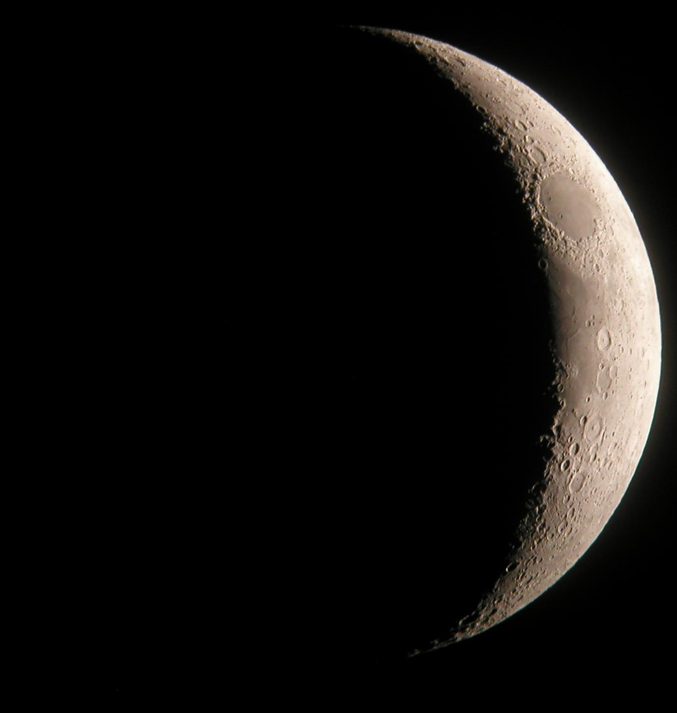

How the Hijri (lunar) calendar works: how months are set and why Ramadan shifts each year
The Hijri calendar is a lunar calendar of 12 months based on the Moon's motion. This reference explains its structure, why Ramadan and the two Eids move about 11 days earlier each year, how a month begins (crescent sighting vs. calculation), the origin of the Hijri era, and the key religious dates, on the basis of sources.

The Hijri calendar is based on the motion of the Moon (the lunar cycle). It has 12 months, and a lunar year is about 354 days — roughly 11 days shorter than the 365-day solar (Gregorian) year. It is precisely this gap that makes Ramadan, Eid al-Fitr and Eid al-Adha fall about 11 days earlier each Gregorian year, cycling through all the seasons over about 33 years. (Source: Encyclopaedia Britannica — "Islamic calendar"; Wikipedia — "Islamic calendar.")
The 12 months and their order
The months of the Hijri calendar are: Muharram, Safar, Rabi al-awwal, Rabi al-thani, Jumada al-awwal, Jumada al-thani, Rajab, Sha'ban, Ramadan, Shawwal, Dhu al-Qidah and Dhu al-Hijjah. Each month has 29 or 30 days, depending on the visibility of the Moon. Because the average lunar month is shorter than the solar one, the months move earlier year by year. (Source: Encyclopaedia Britannica; Wikipedia — "Islamic calendar.")
The origin of the Hijri era
The calendar counts from the Hijra — the migration of the Prophet Muhammad from Mecca to Medina, which corresponds to 622 CE. The 1st of Muharram in the year 1 AH corresponds to 16 July 622 CE (in the Julian calendar). Caliph Umar ibn al-Khattab formally established the Hijri year count around 17 AH (638 CE), because dated official correspondence required it. (Source: Wikipedia — "Hijri era"; Encyclopaedia Britannica — "Hijrah.")

How a month begins: sighting or calculation
By tradition a new month begins with the sighting of the new crescent (hilal / ru'yah): the sky is watched on the evening of the 29th; if the crescent is seen, the new month starts the next day, otherwise the current month is completed to 30 days. Some countries and religious authorities rely on sighting the crescent, others on astronomical calculation or on another country's announcement. For this reason Ramadan and Eid can begin a day or two apart in different countries. (Source: Islamic Relief Worldwide; Wikipedia — "Islamic calendar.")
The key religious dates
Ramadan is the 9th month, the month of fasting. Eid al-Fitr falls on the 1st of Shawwal, marking the end of Ramadan. Eid al-Adha is on the 10th of Dhu al-Hijjah; the Hajj pilgrimage is also performed in that month. Ashura is the 10th of Muharram. Because all of these are tied to the lunar calendar, they shift each year in the Gregorian calendar. (Source: Wikipedia — "Islamic calendar"; Encyclopaedia Britannica.) Ramadan and the Hajj are covered in detail in the references [[ramazon-rozasi-qanday-tutiladi]] and [[haj-umra-qanday-tashkil-etiladi]].
The four sacred months
In Islam four months are called the "sacred months" (al-ashhur al-hurum): Dhu al-Qidah (11), Dhu al-Hijjah (12) and Muharram (1) — three consecutive — plus Rajab (7), which stands alone. By tradition fighting is forbidden in these months. (Source: Wikipedia — "Sacred months.")
Which Hijri year is it in 2026?
The Gregorian year 2026 spans two Hijri years: 1447 and 1448. The year 1448 AH began on 16 June 2026 (1 Muharram) and runs to about June 2027. (Source: Wikipedia — "Islamic calendar.")
The difference between the lunar and solar Hijri calendars
There is also a solar (Shamsi) version of the Hijri calendar, used officially in Iran and Afghanistan. It too takes the 622 CE Hijra as its starting point, but it counts solar years — so it stays locked to the seasons and begins each year at the spring equinox, i.e. Nowruz (around 21 March). Its year number differs from the lunar AH by about 43 years (currently lunar ~1448, solar ~1405). It is a separate system. (Source: Wikipedia — "Solar Hijri calendar.") Nowruz is covered in detail in [[navroz-bayrami-tiklanishi]].
Conclusion
The Hijri calendar is a lunar system of about 354 days a year, based on the motion of the Moon, that sets the timing of religious observances (Ramadan, the two Eids, the Hajj). Because it is about 11 days shorter than the Gregorian calendar, religious dates shift earlier each year and rotate through the seasons. The start of a month traditionally depends on sighting the new crescent, which is why festival dates can differ by a day or two between countries.